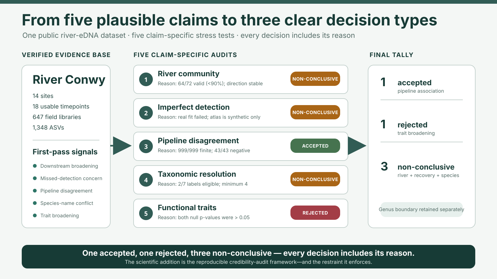
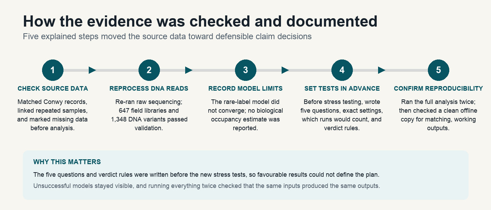
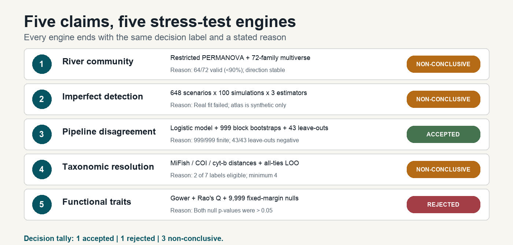
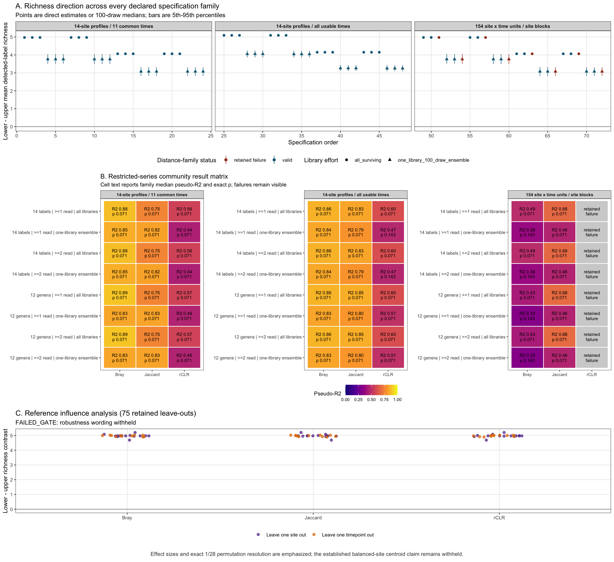
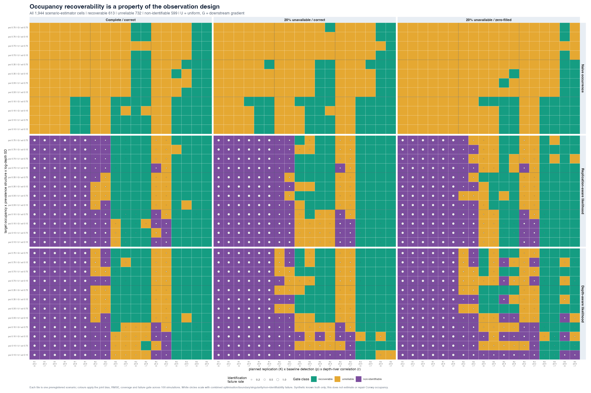
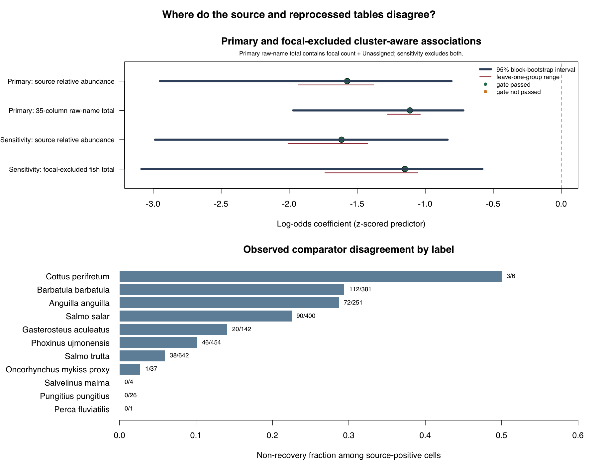
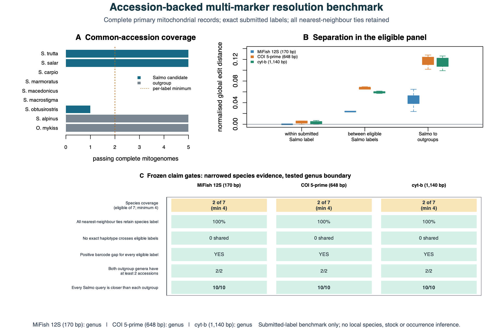
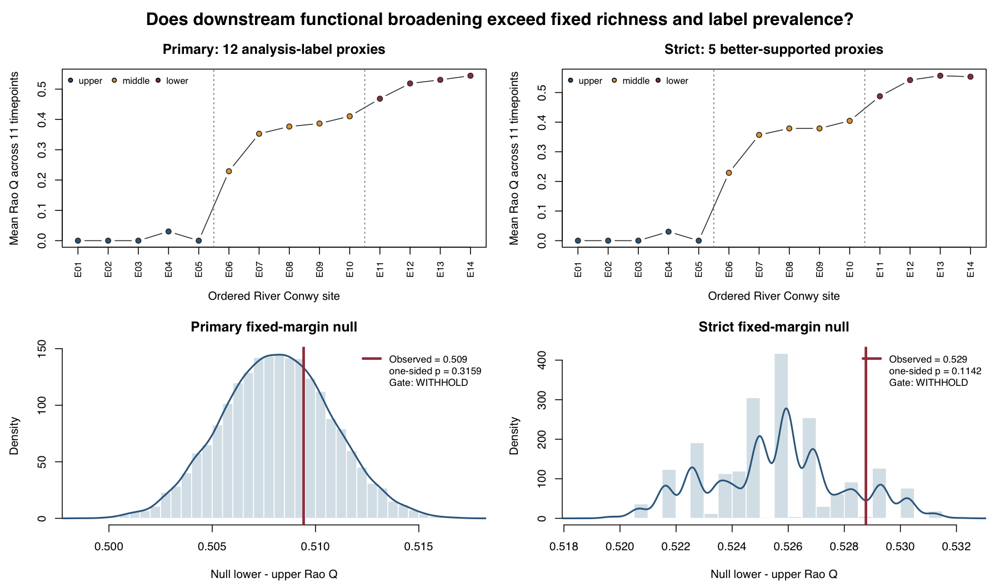

BIOLOGICAL PATTERN
Does detected fish-label diversity broaden downstream?
The analysis distinguishes a stable descriptive river pattern from a confirmed ecological mechanism or true-richness estimate.
Biosciences portfolio edition · six-part scientific audit
This River Conwy fish-eDNA reanalysis did not ask how many conclusions could be extracted from a complex dataset. It asked which conclusions remained defensible after the biological unit, observation process, taxonomic evidence, null expectations, and failure rules were made explicit.
Our question
The source survey provided an unusually rich view of fish eDNA through space and time. The reanalysis focused on a harder question: after correcting the unit of inference and testing the observation, pipeline, taxonomy, and trait assumptions, which biological interpretations remain supportable?
BIOLOGICAL PATTERN
The analysis distinguishes a stable descriptive river pattern from a confirmed ecological mechanism or true-richness estimate.
OBSERVATION PROCESS
The analysis asks when replication and sequencing-depth information identify occupancy—and when they create apparent precision without recoverability.
BIOLOGICAL IDENTITY
The analysis separates sequence-label discrimination from local occurrence, species identity, abundance, and functional mechanism.

Our methodology + key research documentation moments
Documentation was part of the science. We confirmed what had actually been sampled, reprocessed the DNA reads, recorded a model that could not support an estimate, wrote the five stress-test rules before running them, and reran the full workflow to check that the same inputs produced the same outputs. Unsuccessful models and invalid analyses stayed visible.

We confirmed that the records belonged to the River Conwy, linked repeated water samples, marked observations that were missing by design, and checked the environmental-data joins before analysis.
The raw sequencing workflow produced 647 validated field libraries and 1,348 unique DNA sequence variants. Repeated libraries were treated as observations within site × timepoint communities, not as independent biological samples.
The rare-label recovery model did not converge and 18 libraries had inconsistent missing-data rules. We therefore reported no biological occupancy estimate and classified that claim as non-conclusive.
Before the new stress tests began, a dated project plan recorded five questions, what each test would estimate, the exact settings needed to repeat it, which results would count, the exclusions, and the verdict rules.
Each claim received an appropriate stress test. We then ran the complete workflow twice from the committed files, matched the outputs, and checked that a clean offline copy opened with working links. This checks computational reproducibility, not independent biological replication.
Analysis entry commandAnalysis run recordClaim registerWebsite buildRelease checkerOffline packager
Our initial claims from the first part of the project
These were candidate claims formulated by this reanalysis—not claims attributed to the source-study authors. Each received a declared decision rule and one of three presentation outcomes: accepted, rejected, or non-conclusive.
RIVER COMMUNITY
Why plausible: balanced site × timepoint summaries showed more detected labels at downstream sites.
Decision rule: at least 90% valid multiverse families, stable positive direction across specifications and draws, and no reference leave-out reversal.
Non-conclusiveAll 64 valid models broadened downstream, but 64/72 missed the 90% validity requirement.
IMPERFECT DETECTION
Why plausible: eDNA nondetection can occur even where a label is present, particularly under limited replication or low detection.
Decision rule: reliable recovery when the truth is known in simulation, plus a converged fit with consistent missing-data rules for the real Conwy observations.
Non-conclusiveThe real model failed convergence and missing-data checks; the successful atlas was synthetic only.
PIPELINE DISAGREEMENT
Why plausible: source-positive labels were not recovered uniformly by the independently processed count table.
Decision rule: finite cluster bootstraps, a non-zero interval, stable leave-out direction, and a sensitivity excluding the focal label from the count total.
AcceptedThe association held: β = −1.149; all 999 bootstraps and all 43 leave-outs agreed. It remains noncausal.
TAXONOMIC RESOLUTION
Why plausible: longer COI and cyt-b windows contain more sequence information than the short MiFish amplicon.
Decision rule: adequate multi-label coverage, no cross-label exact haplotypes, positive barcode gaps, and correct all-ties leave-one-out classification.
Non-conclusiveOnly 2/7 species labels were eligible, below the minimum of four needed for comparison.
FUNCTIONAL TRAITS
Why plausible: downstream sites contained more detected labels spanning different movement, flow, and trophic traits.
Decision rule: a positive Rao’s Q contrast with one-sided p ≤ 0.05 in both the primary and strict fixed-margin null analyses.
RejectedNeither panel met p ≤ 0.05: primary p = 0.3159; strict p = 0.1142.
Stressing those claims with more tests
The method changed with the scientific question; the decision rule stayed explicit. Reported totals include invalid models, inadequate coverage, and unsuccessful fits rather than quietly removing them.

CLAIM 1 · RIVER COMMUNITY
Tested against
Balanced/all-time panels, site-profile/site × time units, 14 labels/12 genera, two thresholds, full/single-library effort, three distances, 3,600 declared draws, and 75 reference leave-outs.
Observed
64/72 families valid; 64/64 valid families and 3,600/3,600 draws positive; 0/75 leave-outs reversed. Reference p = 0.0714 (2/28).
Decision
Non-conclusive: the direction was stable, but 64/72 valid families (88.9%) missed the required 90%.
CLAIM 2 · IMPERFECT DETECTION
Tested against
648 synthetic scenarios × 100 simulations × three estimators, varying true occupancy, prevalence structure, detection, 1–3 replicates, depth variation/coupling, missingness, and incorrect missing-data coding.
Observed
613/1,944 estimator-scenarios recoverable, 732 unreliable, and 599 non-identifiable. No baseline-detection 0.20 cell passed; one-replicate corrections were structurally non-identifiable.
Decision
Non-conclusive: the real fit failed convergence and missing-data checks; the successful atlas was synthetic only.
Interactive teaching simulatorComplete atlasScenario gridMethods
CLAIM 3 · PIPELINE DISAGREEMENT
Tested against
Exactly 2,344 source-positive comparison cells, 999 site/time/taxon block bootstraps, 43 taxon/site/timepoint leave-outs, and a focal-excluded assigned-fish count sensitivity.
Observed
Source signal coefficient −1.574 (95% bootstrap interval −2.950 to −0.807); focal-excluded count-total coefficient −1.149 (−3.086 to −0.579). 999/999 fits finite; 43/43 sensitivities negative.
Decision
Accepted: β = −1.149; all 999 bootstraps were finite and all 43 leave-outs remained negative. The association is noncausal.
CLAIM 4 · TAXONOMIC RESOLUTION
Tested against
MiFish 12S, COI, and cyt-b exact sharing, normalized edit distances, barcode gaps, and conservative all-ties leave-one-accession-out classification across 21 public records.
Observed
Only 2 of 7 candidate Salmo labels were eligible; the minimum was four. A separate genus boundary passed 10/10 queries against each outgroup for all three markers.
Decision
Non-conclusive: only 2/7 species labels were eligible, below the minimum of four. The separate genus result does not decide the species claim.
CLAIM 5 · FUNCTIONAL TRAITS
Tested against
Equal-axis Gower distances, presence/absence Rao’s Q, and 9,999 checkerboard null draws per panel preserving every unit’s richness and every label’s prevalence within timepoint.
Observed
The observed contrasts were slightly above their null means, but not unusually large: primary p = 0.3159; strict sensitivity p = 0.1142.
Decision
Rejected: neither panel met p ≤ 0.05 (primary 0.3159; strict 0.1142). Its scope is limited by the label and trait proxies.
The models and simulations used to evaluate these claims
Each model below links directly to its visual result, methods record, machine-readable output, and executable implementation. These are local files and remain usable inside the offline website bundle.

MODEL 1 · ROBUSTNESS MULTIVERSE
Reason: 64/72 model families were valid, below the required 90%, despite stable direction.

MODEL 2 · KNOWN-TRUTH SIMULATION
Reason: the real Conwy fit failed convergence and missing-data checks; the successful atlas is synthetic.

MODEL 3 · CLUSTER-AWARE ASSOCIATION
Reason: β = −1.149; all 999 bootstraps were finite and all 43 leave-outs remained negative.

MODEL 4 · ACCESSION BENCHMARK
Reason: only 2/7 species labels were eligible, below the minimum of four needed for comparison.

MODEL 5 · FIXED-MARGIN NULL
Reason: neither null panel met p ≤ 0.05 (primary 0.3159; strict 0.1142).

Our final verdict
Accepted: the bounded, comparator-relative pipeline association met its declared rule.
Rejected: functional-trait broadening beyond richness and prevalence did not meet its null-model rule. Non-conclusive: river-community robustness, real rare-label occupancy correction, and species-level Salmo resolution could not be decided validly with the available evidence.
Final tally: 1 accepted · 1 rejected · 3 non-conclusive.
ACCEPTED
Reason: β = −1.149; all 999 bootstraps were finite and all 43 leave-outs remained negative. The association is comparator-relative and noncausal; it is not a biological false-negative rate.
REJECTED
Reason: neither fixed-margin null panel met p ≤ 0.05 (primary 0.3159; strict 0.1142).
NON-CONCLUSIVE
Scope boundary: Layer A coefficients or survey utility remain not claimed.
Scientific addition
The project’s contribution is not that every starting hypothesis was correct. It is a reproducible workflow whose questions, tests, and verdict rules were written in a dated project plan before analysis. It links each claim to what was measured, how it was stressed, the evidence, the limitation, and the verdict—and explains why each claim is accepted, rejected, or non-conclusive.
The concise narrative with the same structure and headline evidence, expanded into a four-page visual PDF with five model architecture diagrams.
Open HTML brief · Open four-page PDFFull methods, validation history, scientific results, limitations, and provenance.
Open report · Open sourceEvery presentation, method, result table, code path, receipt, and governance record.
Browse deliverables · Read READMEDocumented entry points, repeatable simulation settings, local inputs, build scripts, and verification checks.
Reproduce the project · Inspect impact runner